Ideas para el contenido nuevo de diciembre: videos, videos de clientes y fotos para grabar y sacar desde cero. Graba su equipo, con un celular alcanza. Nosotros les pasamos las ideas y escribimos los textos de los anuncios.
Seis ideas para contar en los anuncios. Cada video o imagen cuenta una de estas.
"Mi viejo me dijo: es el primero y el último que te compro." Frase real de un cliente en Google.
"Duran una barbaridad y quedás vestido impecable." Frase real de un cliente en Google.
Ejemplo: "Me los puse a las 8. Me los saqué a las 11 de la noche."
Ejemplo: "Desde 1897, en Buenos Aires."
Ejemplo: "¿No sabés su talle? Regalale cuero."
Ejemplo: "Te esperamos en Alvear 1902 y en Corrientes 350."
Videos verticales de 15 a 40 segundos, grabados con el celular parado. Lo más importante es el arranque: si en los primeros segundos no pasa algo, la gente sigue de largo.
Un cliente de confianza cuenta su experiencia con el celular, con sus palabras y solo si le pasó. Se lo pueden pedir a clientes que vienen seguido al local: con 2 o 3 personas alcanza para varios videos.
Anuncios de imagen de otras marcas de calzado y de cuero que siguen prendidos hace meses: una marca no deja un anuncio andando tanto tiempo si no le vende. La idea es copiar el formato con productos de López Taibo y fotos nuevas. Cada foto, en dos tamaños: vertical para Instagram y Facebook, y más alargada para historias.
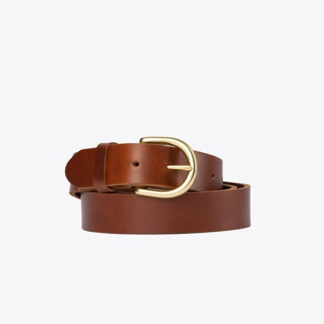
LT: el Cinturón Street enrollado sobre fondo claro, con luz pareja. Sirve para el catálogo y para regalo.
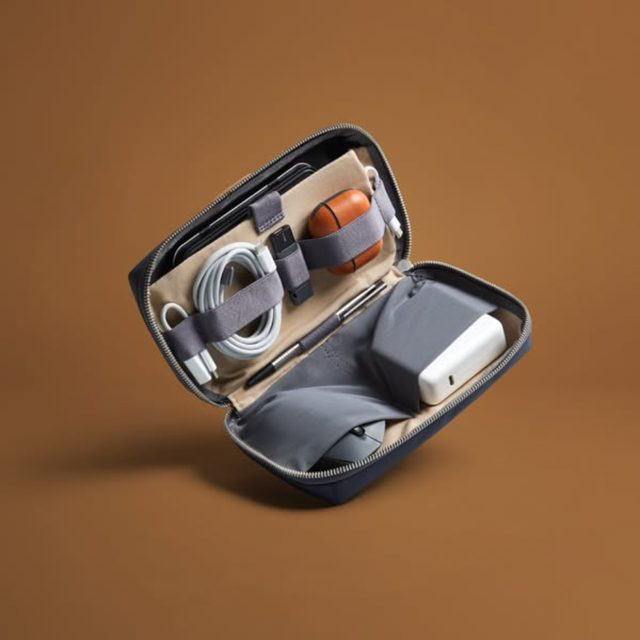
LT: la billetera abierta, con tarjetas y billetes adentro, sobre un fondo de color liso.
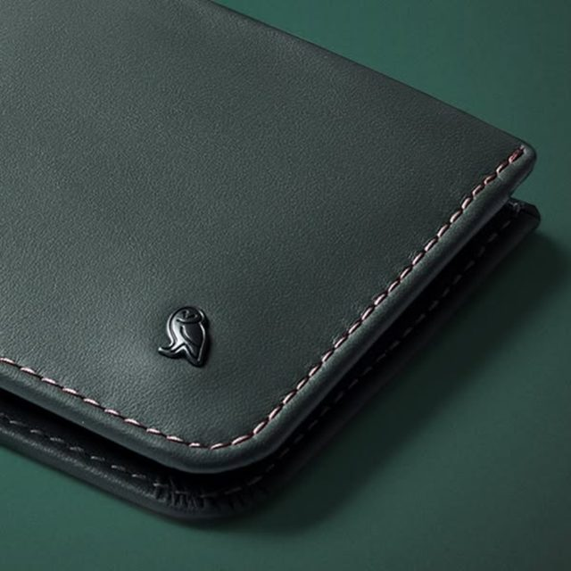
LT: el canto y la costura de la billetera o del cinturón, sobre un fondo de color.
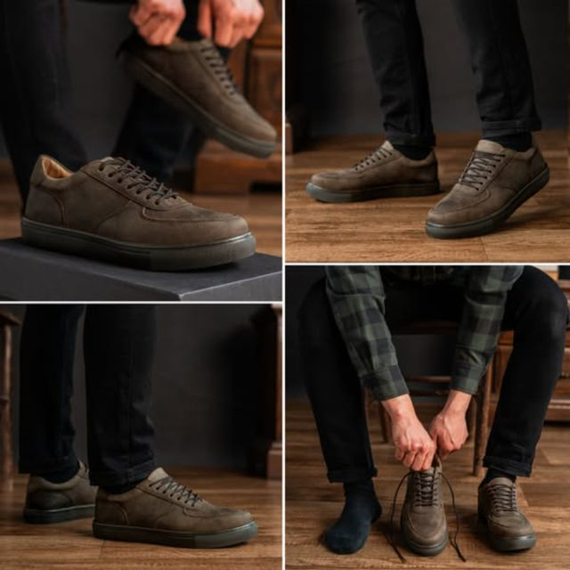
LT: el mismo modelo puesto, en cuatro momentos: atándolo, caminando, sentado, de perfil.
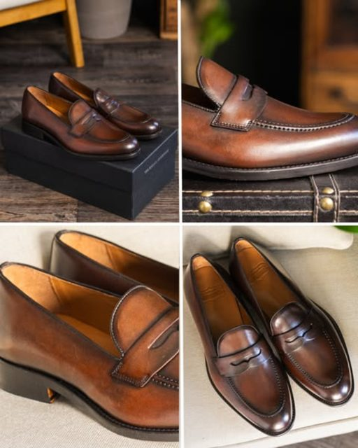
LT: el Mocasín Weston sobre la caja de López Taibo, más tres detalles. Sirve para el regalo.
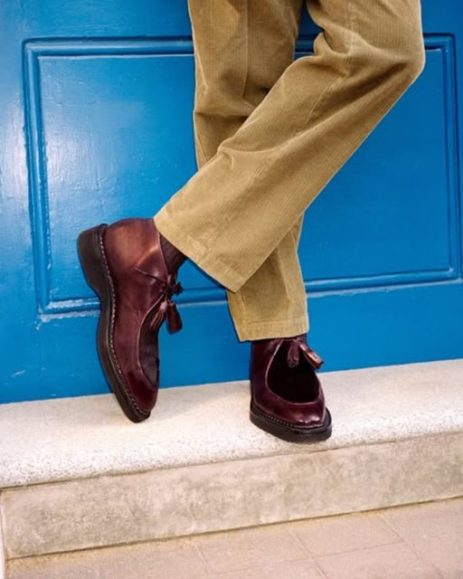
LT: una puerta de Alvear o un escalón de mármol, con pantalón de sastrería.
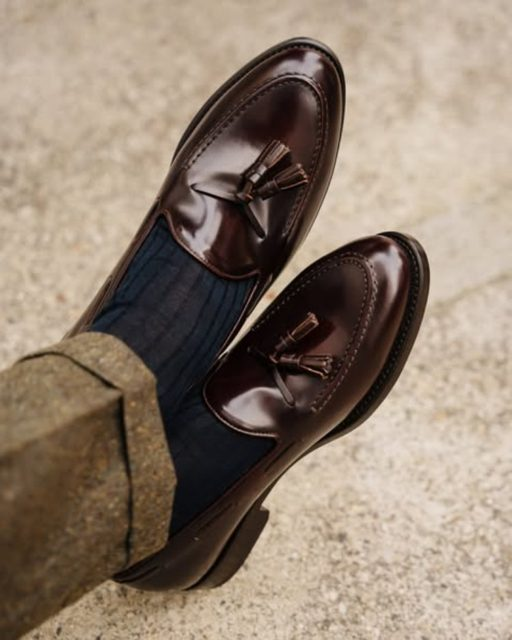
LT: en un café o en un sillón de cuero. Con un celular y luz de ventana alcanza.
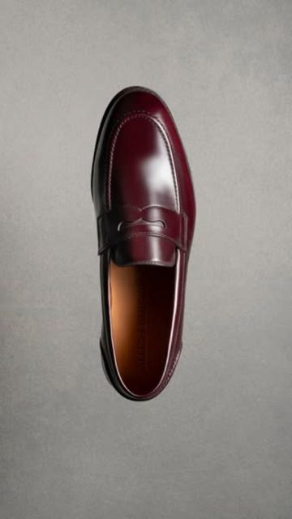
LT: el Mocasín Weston o el Oxford Lessin desde arriba, sobre piedra o madera, con luz de costado.
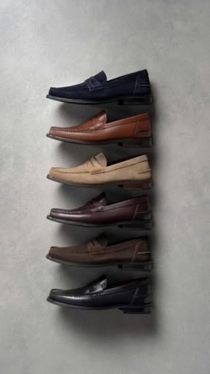
LT: el mismo modelo en todos sus colores, uno arriba del otro.
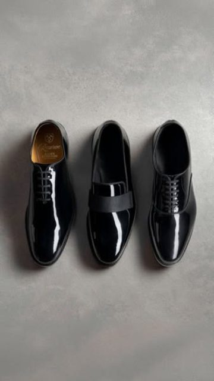
LT: "Tres zapatos para las fiestas": los tres modelos más elegantes que tengan todos los talles.
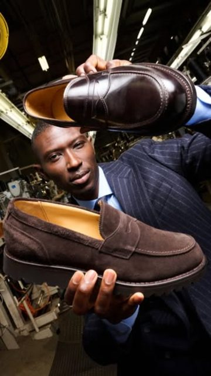
LT: Alberto en el local, sosteniendo un Oxford Lessin y un Mocasín Weston frente a cámara.
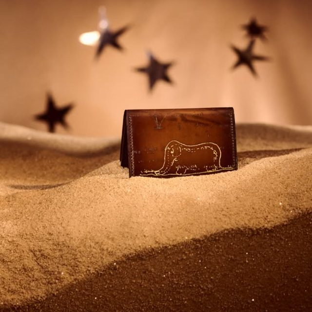
LT: la billetera o el combo de regalo sobre papel madera, con la caja, una rama verde y luz cálida.